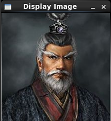

/*
* FileName : read.cpp
* Author : xiahouzuoxin @163.com
* Version : v1.0
* Date : Tue 13 May 2014 07:34:25 PM CST
* Brief :
*
* Copyright (C) MICL,USTB
*/
#include <cv.h>
#include <highgui.h>
using namespace cv;
using namespace std;
int main(int argc, char **argv)
{
Mat img;
img = imread(argv[1], 1);
if (argc != 2 || !img.data) {
cout<<"No image data.\n"<<endl;
return -1;
}
namedWindow("Display Image", CV_WINDOW_AUTOSIZE);
imshow("Display Image", img);
waitKey(0);
return 0;
}包含
Mat是OpenCV中特有的矩阵类，Mat.data是数据指针，通过判断数据指针是否为NULL可以确定是否读入图片数据。
namedWindow有两个参数，其函数原型如下：
CV_EXPORTS_W void namedWindow(const String& winname, int flags=WINDOW_AUTOSIZE);第一个参数winname是窗口名，是窗口对象的唯一标识，就和人的名字一样，因此，不能同时有两个相同名字的窗口！flags设置窗口属性，缺省参数值为WINDOW_AUTOSIZE=CV_WINDOW_AUTOSIZE=1。
和matlab中的一样，有木有，第一个参数表示我要在哪个窗口显示，第二参数表示我要显示那幅图像，用脚趾头想一想，是不是有这两个参数就能知道在哪显示什么了？
还有一个waitKey(int delay=0)表示图片显示窗口保留时间，单位为ms，当delay=0时，按下键盘上任意按键才会关闭图像显示的窗口
用于编译上述程序的Makefile如下：
TARG=read
SRC=read.cpp
LIB=-L/usr/local/lib/
INC=-I/usr/local/include/opencv/
CFLAGS=-g
$(TARG):$(SRC)
g++ -o $@ ${CFLAGS} $(LIB) $(INC) -lopencv_core -lopencv_highgui $^
.PHONY:clean
clean:
-rm $(TARG) -f我将OpenCV安装到默认目录/usr/local下，因此在使用g++编译时要包含链接库（-L/usr/local/lib/）和头文件（-I/usr/local/include/opencv/）
注：在OpenCV基础篇中都使用该格式的Makefile文件，因此后面的例程都可以拷贝后直接使用，只需要修改TARG和SRC参数即可！
